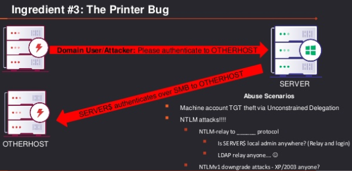

Attackers may need a way to get a computer to communicate with them. Generally for the purpose of capturing or relaying credentials/hashes. One of the easiest ways to accomplish this is through an old but enabled-by-default-on-Windows Print System Remote Protocol (MS-RPRN)
Note: The printer bug isn't the only way to do this!
RpcRemoteFindFirstPrinterChangeNotificatio(Ex)
Purpose: "REMOTESERVER, send me a notification when _____" (e.g. when there's a new print job)
Implication: *Any domain user* can coerce REMOTESERVER$ to authenticate to any machine
Won't fix by Microsoft - 'by design'

The Dangerous Recipe:
1. Compromise a server configured with unconstrained delegation
2. Begin monitoring for delegated TGTs
Start Rubeus' monitor action with /interval:5
3. Coerce a DC to auth using SpoolSample
4. Load the extracted ticket, DCSync, profit!
Other attack scenarios:
If NTLMv1 enabled? Do an NTLMv1 downgrade and get the machine's NTLM hash
NTLM relay:
Account a member of local Admins group?
NTLM relay to LDAP and grand DCSync rights if LDAP signing is not enforced